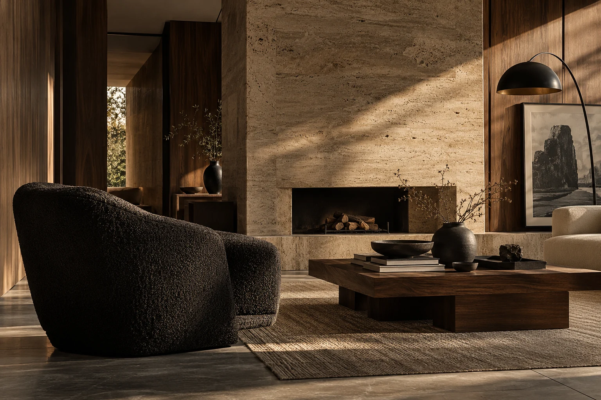
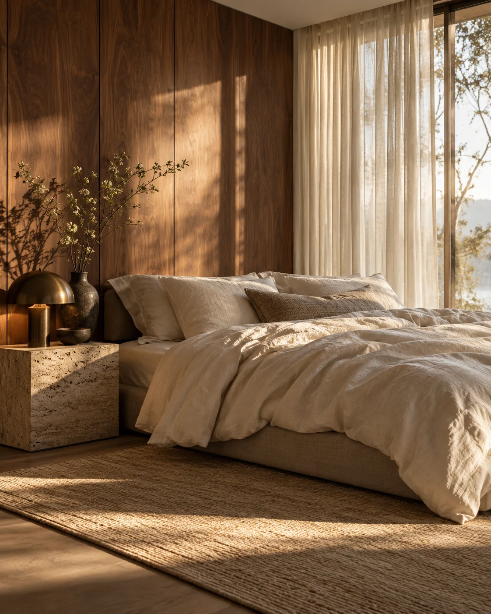

Натуральные материалы
Работаем с камнем, деревом,
текстилем и природными
фактурами.
Интерьеры для жизни
Создаём пространства, в которых можно быть собой. Продуманные, тёплые, настоящие интерьеры для современной жизни.
Смотреть проекты

Работаем с камнем, деревом,
текстилем и природными
фактурами.
Продумываем каждый элемент
с заботой о вашем комфорте.
Создаём интерьеры, которые
остаются актуальными долго.
Мы — студия интерьерной архитектуры ТИШЕ. Мы верим, что дом начинается с человека. С его привычек, ритма и ощущений. Поэтому в основе каждого проекта — внимательное отношение к вам и вашему образу жизни.
Мы объединяем архитектуру, функциональность и эстетику, чтобы создавать пространства, где легко дышать, приятно находиться и хочется возвращаться. Продумываем каждую деталь — от планировки до финальных штрихов.
Каждый проект — это история о людях, месте и ощущениях. Мы создаём интерьеры, которые выглядят естественно, живут вместе с вами и остаются актуальными на протяжении многих лет.
Смотреть проектыПоказаны все проекты.
Концептуальные проекты.
Изображения созданы с помощью ИИ.
Обсудим ваш проект и найдём решения,
которые подойдут именно
вам.